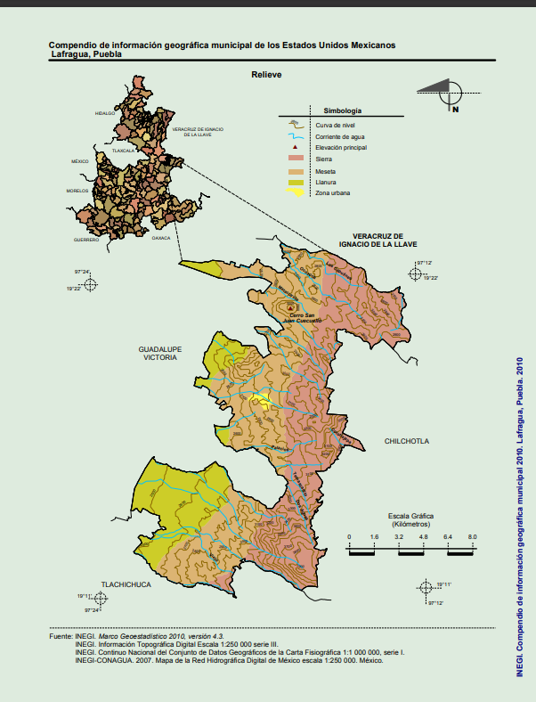

Descubre la belleza y cultura de Lafragua
El municipio de Lafragua es uno de los 217 municipios que conforman el estado de Puebla, se ubica en su tercera región económica
Imagen representativa de los bosques y montañas de Lafragua.
Saltillo La Fragua, oficialmente conocido como Saltillo, es una localidad situada en el estado de Puebla, México, y es la cabecera del municipio de Lafragua.
La localidad se encuentra en las coordenadas 19°17′52″N y 97°17′54″O, a una altitud de aproximadamente 2,860 metros sobre el nivel del mar, lo que la convierte en una de las cabeceras municipales más altas de México . Según datos del censo de 2010, la población de Saltillo era de 761 habitantes, mientras que el municipio de Lafragua contaba con 7,767 habitantes en total. El municipio de Lafragua se extiende sobre 180.887 kilómetros cuadrados, representando el 0.53% del territorio estatal de Puebla. Limita al oeste con el municipio de Guadalupe Victoria, al sur con Tlachichuca, al este con Chilchotla y al norte y noreste con el estado de Veracruz, específicamente con los municipios de Perote y Ayahualulco .
Este municipio cuenta con las siguientes comunidades: